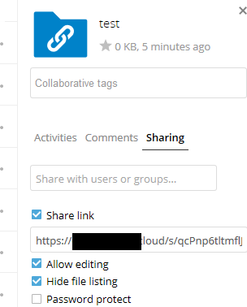

Fazer uploads anônimos
Você pode criar seus próprios diretórios de upload especiais para que outras pessoas possam fazer upload de arquivos para você sem ter que fazer login no servidor e sem ser um usuário Nextcloud. Eles não terão permissão para ver o conteúdo deste diretório ou fazer quaisquer alterações. Esta é uma excelente alternativa para enviar grandes anexos por e-mail, usando um servidor FTP ou usando serviços comerciais de compartilhamento de arquivos.
Configurando seu próprio depósito de arquivos
Vá para Arquivos e crie ou escolha a pasta, o envio anônimo deve ser feito para:

Marque Compartilhar link, Permitir edição, Ocultar lista de arquivos:
Agora você pode enviar o link para a pasta de upload manualmente ou usando a função de envio do Nextcloud, se seu administrador a habilitou.
Carregando arquivos
Usar a função de upload anônimo é simples. Você receberá um link para a pasta de upload, clique no link e, em seguida, verá uma página Nextcloud com um botão “Clique para enviar”:

Isso abre um seletor de arquivos e você seleciona o arquivo ou diretório que deseja carregar. Você também pode simplesmente soltar arquivos na janela.
Quando o upload for concluído, os nomes dos arquivos serão listados: